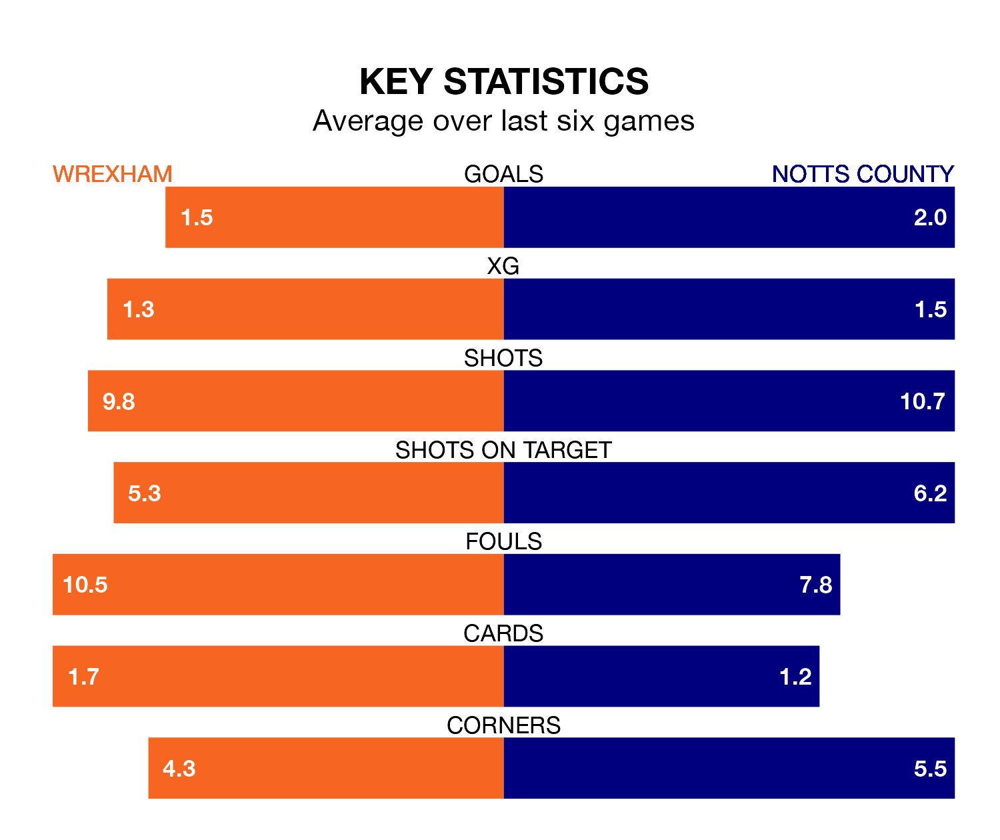

Notts County travel to Wrexham on Saturday in EFL League Two.
The visitors come into the game on the back of a win in their last match, having beaten Newport County 3-1 away, with two goals from Macaulay Langstaff and one from David McGoldrick.
The Dragons also won their last match, 2-1 against Sutton United, with their goals scored by William Boyle and Elliott Lee.
With 65 goals in 31 games so far this season, County are the league's second-highest scorers with 2.1 goals per game. But they are conceding more than average too, letting in 58 goals at a rate of 1.9 per game.
Wrexham are also above average scorers, with 1.9 goals per game, compared to a league average of 1.5. They have conceded 1.4 goals per game.
In Langstaff, the away team have the league's sharpest shooter so far this season. He has notched 22 goals in 31 appearances.
His goal rate of one every 123 minutes is quicker than that of Lee, the Dragons' top scorer with a goal every 185 minutes, and a total of 14 goals in 30 games.
In the last 10 years, Wrexham and County have played each other on nine occasions. Wrexham won three of them, County four, and they drew twice.
On average, the Dragons scored 1.1 goals and County 1.2 in those matches.
Their last meeting was on October 28, when Wrexham won 2-0 away.
The hosts are fourth in the table after 30 games, of which they have won 16 and drawn seven, earning 55 points.
County are three places behind Wrexham in seventh, with 14 wins and five draws putting them on 47 points.
Wrexham are in mixed form in EFL League Two, with three wins and three losses from their last six games.
With a win and two draws over that period, County's form is worse – they have taken five points from 18, compared to the Dragons' nine.
Updated: 12:06 (UTC), 15/02/24